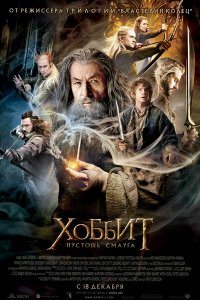

Բարի Գալուստ իմ առաջին էջ
+37498941429
+37491111294
Хоббит 2: Пустошь Смауга (2013)
Еще совсем недавно Бильбо Бэггинс был обычным хоббитом, ничем не отличавшимся от своих соседей. Он плотно питался, покуривал хороший табак и был вполне доволен своей спокойной жизнью. Все изменила встреча с волшебником Гэндальфом и отрядом из тринадцати гномов, желающих вернуть потерянные давным-давно сокровища и свой дом – Одинокую гору, захваченную драконом Смаугом. Теперь Бильбо сам состоит в гномьем отряде и понемногу осваивается в роли отважного воина.
Отряд уже миновал Туманные горы, в недрах которых Бильбо нашел волшебное кольцо, и вдали видны очертания родной горы. Впереди новый этап пути, и путешественников ждут новые испытания. Их путь лежит в Лихолесье, где живут опасные кровожадные существа, встреча с которыми может стоить жизни, а также эльфы, чьи отношения с гномами в последнее время заметно ухудшились. Но на пути к Лихолесью путникам еще придется заручиться поддержкой таинственного и могущественного незнакомца.
Год выпуска: 2013
Страна: США, Новая Зеландия
Жанр: Фэнтези, Приключения
Перевод: Дублированный
Продолжительность: 03:06:19
Премьера (РФ): 18 декабря 2013
Режиссер: Питер Джексон
В ролях: Мартин Фриман, Иэн МакКеллен, Ричард Армитидж, Джеймс Несбитт, Кен Стотт, Грэм МакТавиш, Уильям Кирчер, Стивен Хантер, Дин О’Горман, Эйдан Тернер